上篇说到 Unity 没有使用 OnRenderImage 方法，再来实现一个新的
CommandBuffer_Outline
PostProcessV2 没有使用相机的后期，先来分析可能的方法
既然我们可以通过 CommandBuffer.DrawRenderer 的方式来绘制用于描边 Mesh
那么我们在相机前方绘制一个 始终朝向相机的 Quad 不就可以了么
通过某种方式获取到当前帧渲染的结构就可以完全绕过 OnRenderImage
效果预览
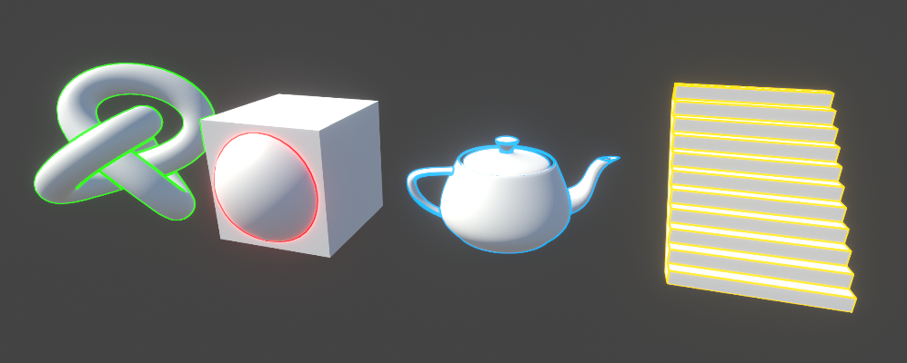
实现动机
既然已经可以在 ImageEffect 阶段实现了， 为什么还要做这些事情
限制
OnRenderImage 存在诸多限制
时序上我们只有 ImageEffectOpaque 一个标记用来选择是在后期的半透前还是后进行处理
参数上只有源 source 和目标 dest , 很多可能要用到的中间参数会在这个阶段之前被舍弃
自由扩展
很多时候要得不只是后期，并且需要能够在光照之前进行处理
有些针对性的效果可以极大的节省工作流程和时间
- 毛玻璃光照：在透明面板绘制前拿到渲染内容，避免移动端消耗巨大的的 GrabPass
- 雨雪天气效果：在光照反射之前获取到 Gbuffer ，改变其颜色，光滑度，附加纹理动画，在低成本下可以实现很好的效果
- 风格化渲染：一些 NPR 渲染会在特定阶段干预调整渲染效果
- 以及更多 GamePlay 相关创意
理论分析
描边部分的整个实现和上一篇基本没有区别
使用 CommandBuffer
将当前 CameraTarget 渲染到 RT 上
屏幕前 BillBoard 的 Quad 使用描边材质渲染
基本实现
在查阅资料时，发现了一篇对 PostProcessV2 深入解读的文章
PostProcessStackV2详解
从中我们可以学到本文需要的所有知识
绘制 Quad
创建一个专门用于最终效果合成的 Buffer ，绘制到屏幕前
Quad 创建1
2
3
4
5
6
7
8
9
10
11
12
13
14
15
16
17
18
19
20
21
22
23
24
25
26
27
28
29
30
31
32
33
34
35
36
37
38
39
40
41
42
43
44
45
46public class MeshUtils
{
#region FullScreen Mesh
private static Mesh fullScreenMesh;
public static Mesh FullScreenMesh
{
get
{
if (fullScreenMesh != null)
return fullScreenMesh;
var vertices = new[]
{
new Vector3(-1f, -1f, 0f),
new Vector3( 1f, 1f, 0f),
new Vector3( 1f, -1f, 0f),
new Vector3(-1f, 1f, 0f)
};
var uvs = new[]
{
new Vector2(0f, 0f),
new Vector2(1f, 1f),
new Vector2(1f, 0f),
new Vector2(0f, 1f)
};
var indices = new[] { 0, 1, 2, 1, 0, 3 };
fullScreenMesh = new Mesh
{
vertices = vertices,
uv = uvs,
triangles = indices
};
fullScreenMesh.RecalculateNormals();
fullScreenMesh.RecalculateBounds();
return fullScreenMesh;
}
}
#endregion FullScreen Mesh
}
绘制1
2
3
4outlineBuffer = new CommandBuffer();
outlineBuffer.name = "Wonderm_Outline_Effect";
outlineBuffer.DrawMesh(Wonderm.Shared.MeshUtils.FullScreenMesh, Matrix4x4.identity, mat, 0, 0);
先使用纯色 Shader 看下效果
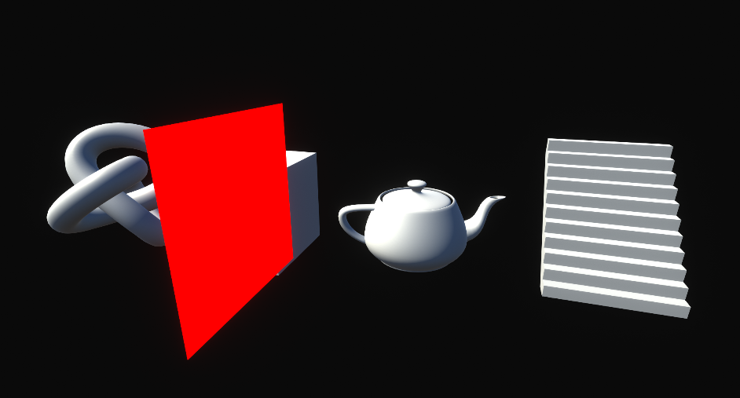
然后在修改顶点 Shader 让它面向屏幕1
2
3
4
5
6
7
8
9
10
11
12
13
14v2f vert (appdata v)
{
v2f o;
o.vertex = v.vertex;
#if UNITY_UV_STARTS_AT_TOP
o.uv.xy = v.uv.xy * float2(1.0, -1.0) + float2(0.0, 1.0);
#else
o.texcoord.xy = v.texcoord.xy;
#endif
o.uv.zw = UnityStereoTransformScreenSpaceTex(o.uv.xy);
return o;
}
整个屏幕已经是一片红色了
描边绘制
参照上一篇把代码移植过来实现描边
效果如下
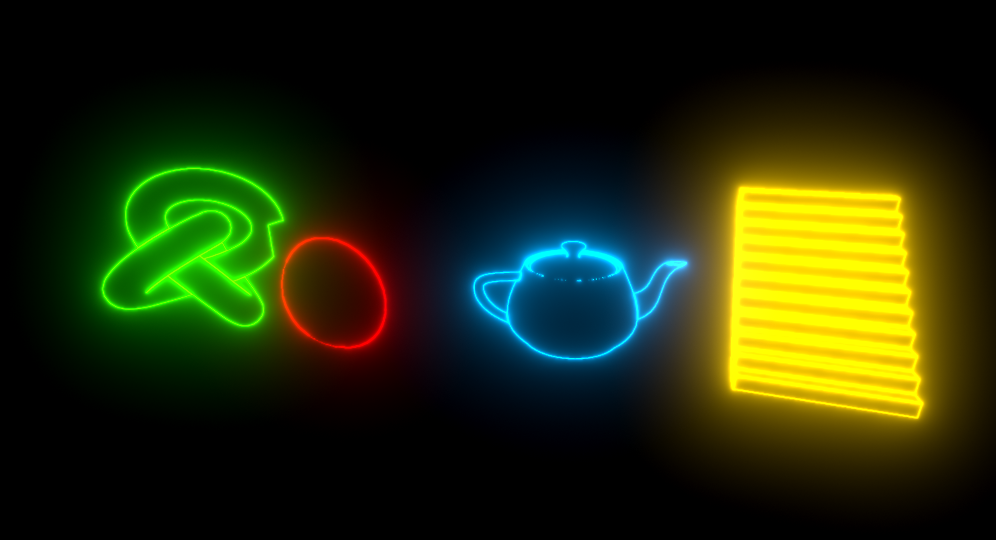
流程基本跑通，看一眼 FrameDebug
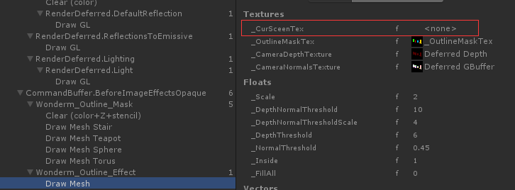
获取 CameraTarget
通过 FrameDebug 检视一番
Unity 通过 Hidden/PostProcessing/CopyStd 将 CameraTarget 渲染到 RT 中
使用的以下方法1
2context.GetScreenSpaceTemporaryRT(cmd, tempRt, 0, sourceFormat, RenderTextureReadWrite.sRGB);
cmd.BuiltinBlit(cameraTarget, tempRt, RuntimeUtilities.copyStdMaterial, stopNaNPropagation ? 1 : 0);
BuiltinBlit ??? !!!!! FuckUnity
Google 一下得到答案
(How to get screen buffer RenderTargetIdentifier](https://forum.unity.com/threads/how-to-get-screen-buffer-rendertargetidentifier.320410/]
1 | int width = cam.pixelWidth; |
至此实现已经完成，看下效果
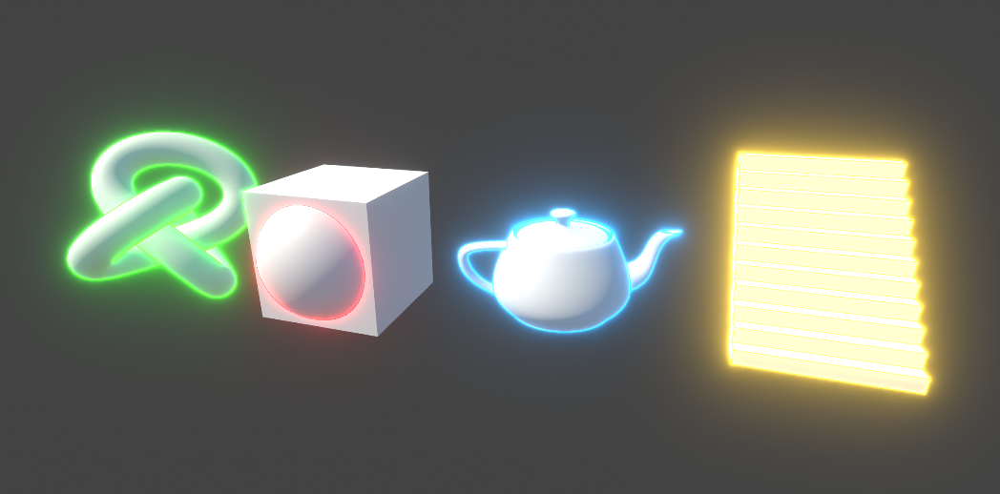
原理图解
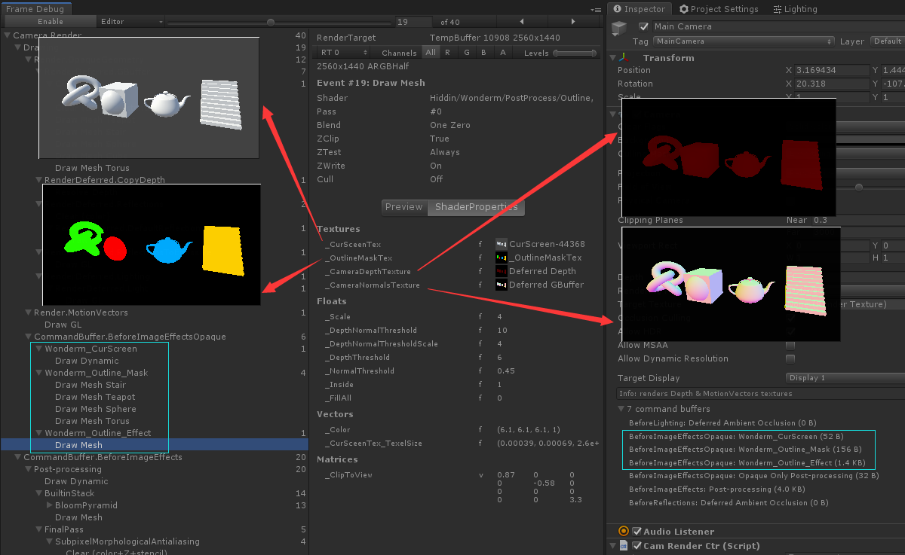
修复与改进
Bug
移动相机看下动态效果，竟然漂移了，查看下 Mask 贴图，果然是没有清理
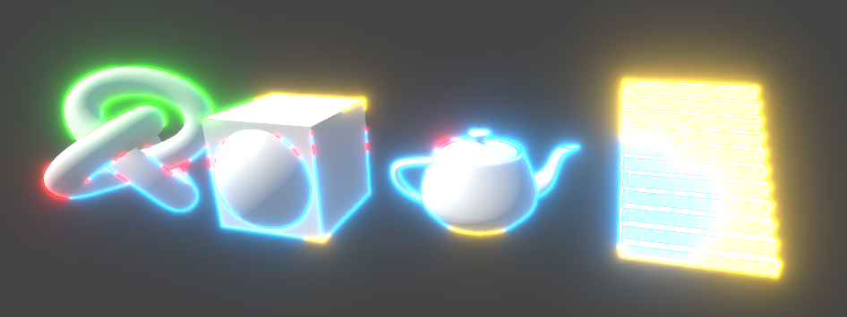
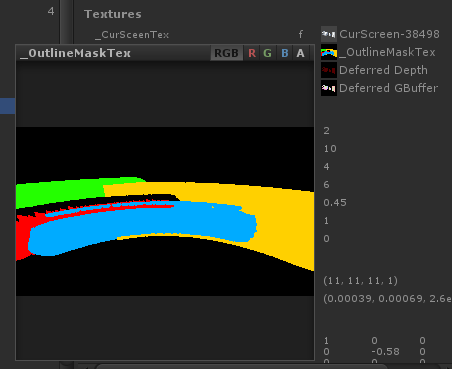
上篇写的后期也忘记清理了，设置渲染目标之后清除一下即可
代码如下
1 | maskBuffer.GetTemporaryRT(ShaderIds.outlineMaskId, -1, -1, 24, FilterMode.Bilinear, RenderTextureFormat.ARGBFloat); |
展望
目前可以看到我们的实现使用了三个 CommandBuffer 而 Unity 只使用了一个
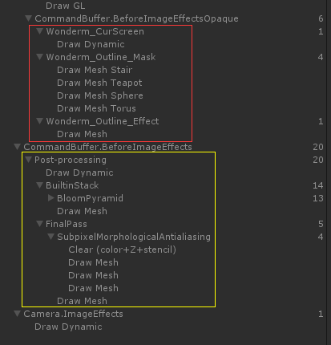
改进的方案有如下几种
- 使用一个 Buffer ，内部区分 Stack 来叠加不同效果
- 保持当前结构，将中间阶段和最终混合阶段Buffer变成通用，总数量为2+N
目前只有描边的需求，未来扩展依据项目进行定制，描边部分的迁移是很简单的
独立的原因
为什么选择自己写，而不是直接给 PostProcessV2 写扩展
按照Unity一贯的逻辑，大版本更新和 RP 的切换会导致 PostProcess 的完全改变
包括资源和 API 的变更，使用 Unity 的不能保证安全的过渡
比如 V1 到 V2 的升级基本重写，相同参数结果不一致
又比如现在的 HDRP 突然自己实现了一套 PostProcess ，且完全不兼容 PostProcessV2
最终效果
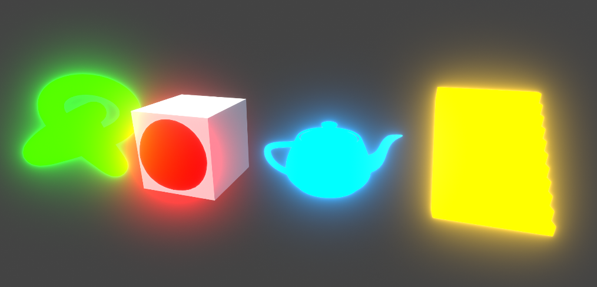
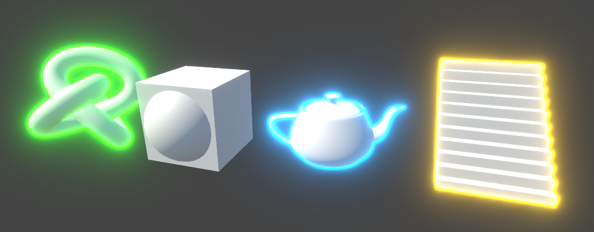
参考资料
How to get screen buffer RenderTargetIdentifier
PostProcessStackV2详解